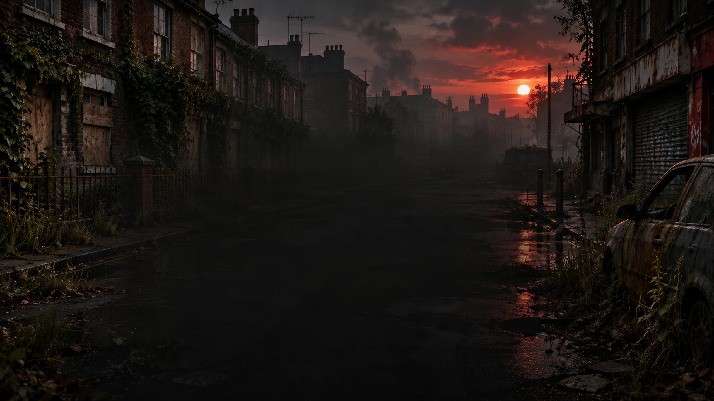

Загружаю сохранённую историю…
Продолжение истории
Загрузка текущей локации…

Своё действие ▾
Инвентарь
Предметы и снаряжение
Персонажи
Люди, с которыми ты сейчас взаимодействуешь
Данные появятся после загрузки.
Карта
Координаты текущей сцены пока неизвестны
Карта покажет точное место, когда в данных сцены появятся координаты. Мы не выдумываем местоположение.